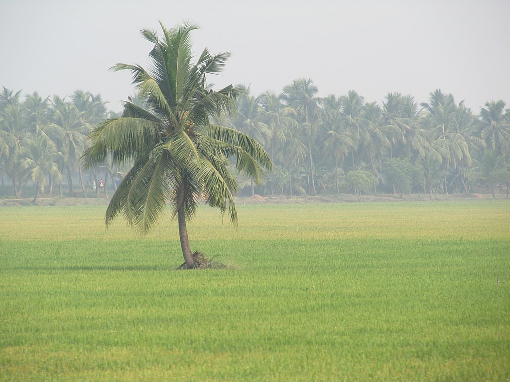

.png)
During the Madras Presidency in 1823, the District of Rajahmundry was created.[10] It was reorganised in 1859 and bifurcated into the Godavari and Krishna districts. During British rule, Rajahmundry was the headquarters of Godavari district, which was further bifurcated into the East Godavari and West Godavari districts in 1925.[11] When the Godavari district was divided, Kakinada became the headquarters of East Godavari and Eluru became the headquarters of West Godavari. After the 4 April 2022 bifurcation for a separate Eluru district, Bhimavaram became the new headquarters of the West Godavari district.
Geography The district occupies an area of 7,742 km2 (2,989 sq mi). The district is bounded by the East Godavari district on the North, Eluru district on the Northwest, Dr. B. R. Ambedkar Konaseema district on the Southeast, Krishna district on the Southwest. and Bay of Bengal on the south. The Godavari River flows on the east, while the Tammileru River and Kolleru Lake separate it from the Krishna district on the west.[12]: 22 Rivers and topography West Godavari is a flat region with a slightly slope along the rivers flowing eastward. The three rivers cutting through the district are the Godavari (after which the district is named), the Yerrakaluva, and the Tammileru. Sir Arthur Cotton Barrage, Eluru Canal, Vijayarai Anicut, Tammileru, Jalleru, and the Yerrakaluva reservoirs are the major sources of irrigation.[13][14] Climate
West Godavari is a flat region with a slightly slope along the rivers flowing eastward. The three rivers cutting through the district are the Godavari (after which the district is named), the Yerrakaluva, and the Tammileru. Sir Arthur Cotton Barrage, Elur u Canal, Vijayarai Anicut, Tammileru, Jalleru, and the Yerrakaluva reservoirs are the major sources of irrigation.[13][14]
Eluru is the largest city of the district with many destinations having Buddhists and archeological importance, such as the Guntupalli Caves, one of the top 30 Indian heritage sites, near the city.[26] Eluru hosts a 74-foot high Buddha statue in the heart of the city. Some of the religious destinations include Dwaraka Tirumala, known by the name of Chinna Tirumala,[27] Veerabhadra Temple, Pattiseema, and Pancharama Kshetras of Palakollu and Bhimavaram.[28] Other tourist destinations of importance are Perupalem Beach at Narasapuram, the Kolleru Lake (the largest fresh water lake in the country and a bird sanctuary),[29] Sir Arthur Cotton Barrage, and Havelock Bridge. The Government of Andhra Pradesh is keen on developing Rajahmundry Airport as an international airport to boost tourism, including helicopter tours over the Godavari districts. The Polavaram Project irrigation system is expected to become another tourist attraction for the district.


Telugu is the most widely spoken language.[21] The Vedas, which have oral heritage recognition by UNESCO, are taught at the Sri Venkateswara Veda Patasala of the district's Bhimavaram village.[24] The district is well known for its wool-pile carpets and hand woven products
| AREA | 7742km^2 |
|---|---|
| IAS | Naga rani |
| IPS | u.ravi prakash |
| DGP | rajendranath reddy |
| mandals | 48 |
| population | 1,779,935 |
| GVMC commisioner | saikanth varma |